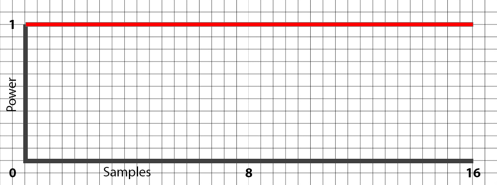
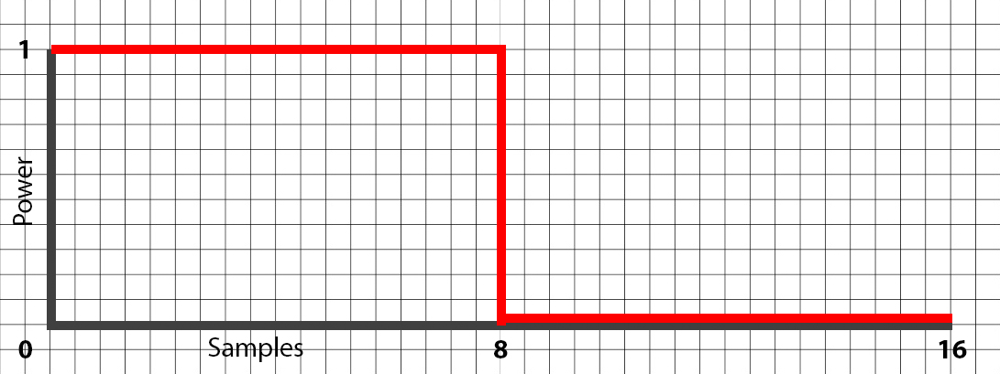
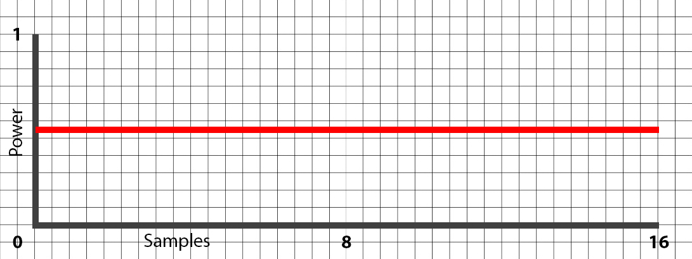
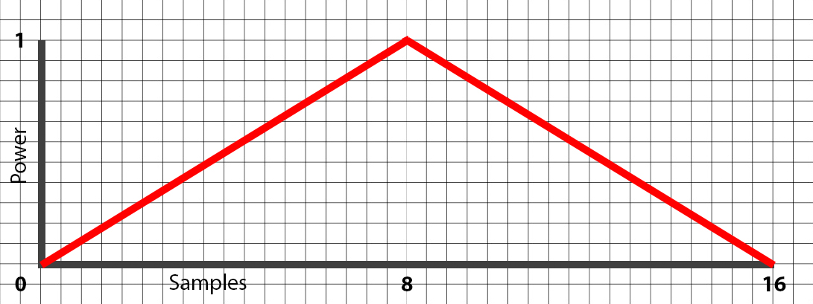
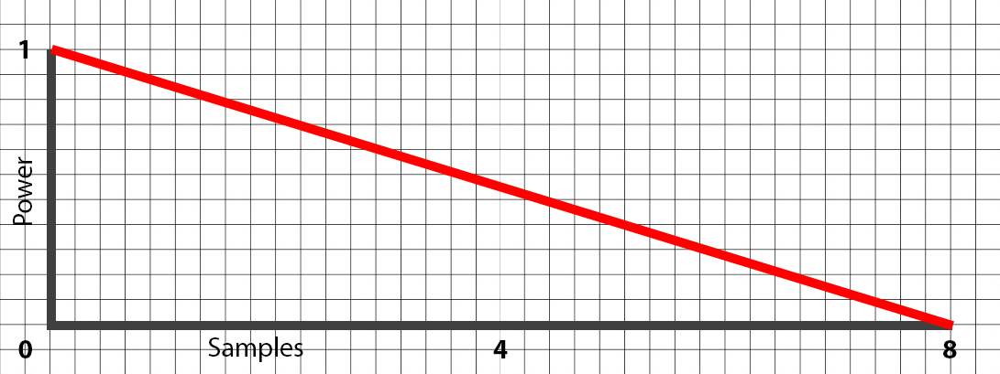
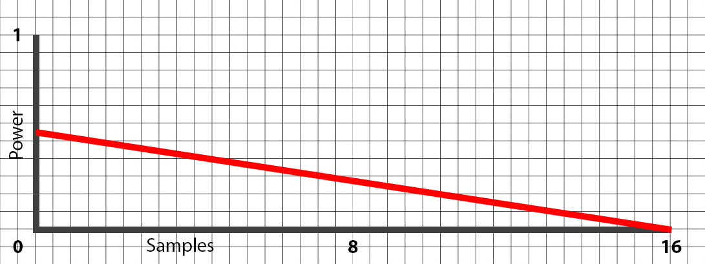
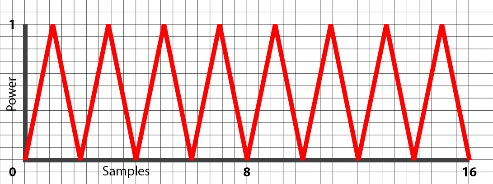
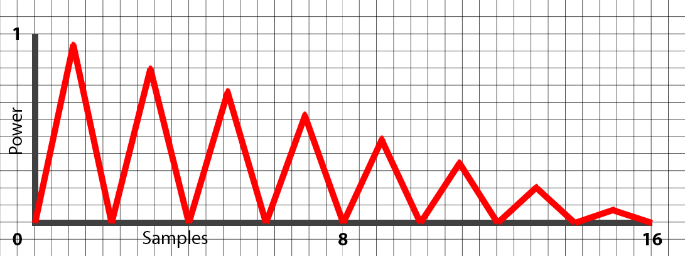
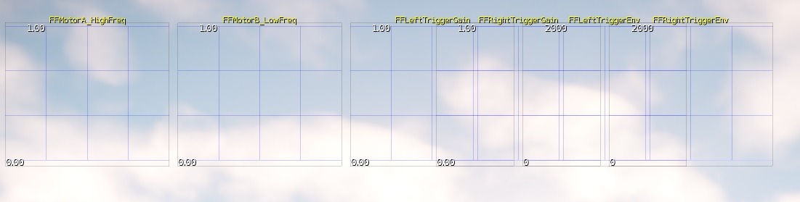
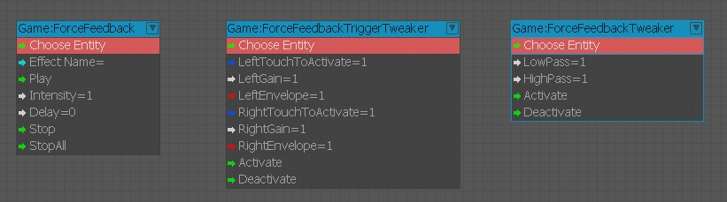

Обзор
Темы
CRYENGINE может использовать систему ForceFeedback (FFB). Простая серия чисел зацикливается для реализации сгенерированных эффектов. Эффект — это комбинация паттерна для воспроизведения и огибающей для управления воздействием паттернов на двигатель контроллера в течение определенного периода времени. Дополнительную информацию об узлах Forcefeedback см. Игровые узлы.
Файл, содержащий информацию о конфигурации эффектов, находится по адресу:
GameSDK\Libs\GameForceFeedback\ForceFeedbackEffects.xml
Ключевые области конфигурации в файле:
- Узоры
- Конверты
- Эффекты
Узоры
Шаблон определяет мощность эффекта грохота, который необходимо применить к указанному двигателю внутри контроллера. Для начала откройте файл, указанный выше (ForceFeedbackEffects.xml) и давайте посмотрим на определения шаблонов. Поле образца в основном отправляет на двигатель значение мощности в диапазоне от 0 -> 1 (не указано — максимальный шум).
<Patterns>
<!-- Pattern definition accepts from 1 to 16 samples -->
<Pattern name="100" samples="1" />
<Pattern name="75" samples="0.75" />
<Pattern name="50" samples="0.5" />
<Pattern name="30" samples="0.3" />
<Pattern name="20" samples="0.2" />
<Pattern name="12" samples="0.12" />
<Pattern name="square" samples="1,1,1,1,1,1,1,1,0,0,0,0,0,0,0,0" />
<Pattern name="triangle" samples="0,0.15,0.3,0.45,0.6,0.75,0.9,1,1,0.9,0.75,0.6,0.45,0.3,0.15,0" />
</Patterns>Пример 1
- <Название шаблона="100" образцов="1" />
Этот шаблон называется "100" и он использует одно постоянное значение "1" по всей длине узора.
Рис1: Полная мощность (образцы = 1) 
Пример 2
- <Pattern name="square" sample="1,1,1,1,1,1,1,1,0,0,0,0,0,0,0,0" />
Этот узор называется "квадрат", и он подает полную мощность на двигатели для первых 8 выборок, а затем не применяет значения к следующим 8 выборкам.
Рис.2: Примерно полная мощность, затем нет (выборки = 1,0). 
Пример 3
- <Название шаблона="50" образцов="0,5" />
Этот шаблон называется "50" с постоянной 1/2 мощности.
Рис.3: мощность 50 % (выборки = 0,5). 
Пример 4
- <Pattern name="triangle" sample="0,0.15,0.3,0.45,0.6,0.75,0.9,1,1,0.9,0.75,0.6,0.45,0.3,0.15,0" />
Этот шаблон называется "треугольник" и он использует полные 16 значений для создания эффекта.
Если вы обратите внимание на название этого эффекта «треугольник», первые 8 сэмплов растут от 0 -> 1, а последние 8 уменьшаются от 1 -> 0. Это имитирует шаблон треугольника, медленно наращивая силу эффекта, а затем снова снижается до нуля, создавая цикл.
Рис.4: Примерное изображение треугольной волны. 
Здесь описывается концепция шаблонов мощности, которая будет подаваться на двигатели контроллера. Диапазон мощности варьируется от 0 -> 1, а максимальное изменение, которое вы можете добавить к сэмплам, составляет 16.
Обратите внимание, что при резком переключении между 0,1,0,1,0,1,0,1,0,1,0,1,0,1,0,1 вы получите неровную волновую структуру, но вы должны помнить, что двигатели внутри контроллера нужно время, чтобы раскрутиться/замедлиться, так что на самом деле вы, скорее всего, будете испытывать постоянную вибрацию, а не ощущать эффект полного включения/выключения.
Это произойдет, если время, указанное для воспроизведения эффекта, слишком short, чтобы двигатели могли приспособиться к скорости, которую вы им задаете!
Создать свои собственные паттерны так же просто, как определить новое имя паттерна и затем указать значения, которые будут воспроизводиться на моторе (максимум 16 индивидуальных значений). Если вы решите использовать меньше 16 семплов, убедитесь, что они делятся на 2, чтобы система могла равномерно распределить эффект по временной шкале. Например: 1, 2, 4, 8, 16 сэмплов в пределах эффекта.
Конверты
Конверты используются в качестве переопределения шаблонов. Они дополняют узор, либо усиливая, либо ослабляя реальный эффект, в зависимости от того, как вы настроили огибающую.
<Envelopes>
<!-- Envelope definition accepts from 1 to 8 samples -->
<Envelope name="linearDecrease" samples="1,0" />
<Envelope name="Gate" samples="1,1,1,1,1,1,1,0" />
<Envelope name="CosineDecrease" samples="1,0.98,0.92,0.83,0.69,0.54,0.25,0" />
<Envelope name="constant" samples="1" />
<Envelope name="50constant" samples="0.5" />
<Envelope name="Gausscharge" samples="0,0,0,0,1,1,1,1" />
</Envelopes>Пример 1
- <Envelope name="linearDecrease" sample="1,0" />
Эта огибающая при использовании в сочетании с эффектом сначала позволяет основному эффекту воспроизводиться на максимуме, а затем со временем уменьшает воздействие, которое эффект может оказать на двигатель, вплоть до нуля.
Давайте рассмотрим приведенный выше шаблон под названием «0.5"В качестве примера.
Рис5: Конверт с узором 0,5.
Теперь представление конверта для "linearDecrease» описано ниже.
Рис.6: Конверт линейного уменьшения (обратите внимание на максимальные образцы 1–8) 
Результат
Вот каким будет результат, если вы объедините узор 0,5 с линейным уменьшением огибающей. Паттерн начинается с максимального значения (0,5), поскольку огибающая воспроизводится с максимально возможным значением, указанным в шаблоне.
Затем в ходе действия эффекта огибающая снижает способность паттерна воспроизводить заданное значение, пока оно не достигнет нуля.
Рис.7: Результат узор 0,5+лконверт для уменьшения наушников 
Пример 2
Предыдущий пример был довольно простым, и на этот раз мы покажем более сложный эффект в действии, который регулируется огибающей. Паттерн будет иметь пилообразный эффект, серию из 0,1,0,1.0,1,0,1.0,1,0,1,0,1,0,1.
Рис 8: Зубчатый узор. 
Рис.9: Конверт линейного уменьшения (обратите внимание на 1–8 максимальных образцов)
Результат
Теперь, когда мы применим огибающую линейного уменьшения поверх пилообразного узора, результирующий эффект будет следующим:
Рис. 10. Пила с применением линейного уменьшения. 
Здесь показано, как комбинировать эффекты для создания узор, а затем при применении с конверт, эффект изо всех сил старается воспроизвести весь паттерн, но его ограничивает огибающая.
Сочетание шаблона и конверта экономит ваше время, необходимое для расчета фактических истинных значений снижения мощности. Это будет напоминать такие значения, как 0, 0,95, 0, 8,2, 0 и т. д., если они представлены в виде строки, разделенной запятыми, в файле *.xml.
Эффекты
Раздел эффектов будет фактической частью, которая будет вызываться с использованием кода, Flowgraph или любого другого средства для запуска воспроизведения эффекта. Эффект объединяет паттерн и огибающую вместе, а затем также назначает его конкретному мотору, на котором вы хотите его воспроизвести. Ниже мы еще раз рассмотрим несколько примеров различных вариантов эффектов и способы их настройки.
Разбивка эффектов
<Effect name="explosion" time="1.0" >
<MotorAB frequency="1" pattern="100" envelope="linearDecrease" />
</Effect>Для начала давайте разберем этот блок, чтобы понять основную схему.
- <Effect name="explosion" time="1.0" >
- Название эффекта = Имя эффекта, на который будет ссылаться FlowGraph или код. Поэтому название эффекта логично основано на его функции.
- Время = Определяет продолжительность времени, в течение которого будет воспроизводиться эффект грохота.
- <MotorAB Frequency="1" Pattern="100" Конверт="linearDecrease" />
- MotorAБ = Двигатель, на который вы хотите нацелить этот эффект. Вы можете настроить таргетинг на MotorA или MotorB по отдельности или на оба сразу с помощью MotorAB (как в этом примере). Мы даем вам возможность разделить их, так как вы можете захотеть воспроизвести один и тот же эффект на обоих моторах, но с разной огибающей!
- Частота = Оставьте это значение одним (нет необходимости менять это). Увеличение этого числа приведет к смешиванию всех значений вместе. Помните, что двигатель должен включиться до установленного вами уровня, и мы обнаружили, что частота 1 оптимальна для «ощущения» всех данных, которые вы отправляете двигателям. При увеличении этого значения (используя фразу = «не вижу леса за деревьями»), двигателям будет отправлено слишком много значений, и вы не сможете различить разницу между ними. Попробуйте увеличить/уменьшить время вместо частоты, чтобы изменить воспроизводимый эффект.
- Узор = Указывает паттерн, который вы хотите воспроизвести внутри этого эффекта.
- Конверт = Указывает второе значение, которое будет добавлено к вашему эффекту (например, linearDecrease).
Пример 1
<Effect name="100_50Constant" time="5.0" >
<MotorAB frequency="1" pattern="100" envelope="50constant " />
</Effect>Этот эффект отправит один и тот же шаблон на оба мотора с одинаковой огибающей.
Пример 2
<Effect name="100_50Constant" time="5.0" >
<MotorA frequency="1" pattern="100" envelope="50constant " />
<MotorB frequency="1" pattern="100" envelope="50constant " />
</Effect>Этот эффект аналогичен описанному выше, но мы разделяем двигатели (A,B) на отдельные линии для индивидуального управления (хотя они одинаковы).
Пример 3
<Effect name="100_50Constant" time="5.0" >
<MotorA frequency="1" pattern="100" envelope="50constant " />
<MotorB frequency="1" pattern="12" envelope=" linearDecrease " />
</Effect>MotorA работает на максимальной мощности (но выходная мощность ограничена 50 % из-за огибающей)
MotorB работает с мощностью 0,12 и в конце приближается к нулю из-за огибающей LinearDecrease.
В геймпадах Xbox One система обратной связи по усилию теперь читает MotorLT для левого триггера, MotorRT для правого триггера и MotorLTRT для обоих триггеров из ForceFeedbackEffects.xml.
Плохие комбинации узоров и конвертов
В определенных обстоятельствах, если вы не обратите пристального внимания, вы можете в конечном итоге отменить эффект FFB, который хотите воспроизвести. Это может произойти, когда огибающая работает в направлении, противоположном рисунку. Давайте посмотрим на пример ниже:
<Effect name="Not_so_good_effect" time="5.0" >
<MotorA frequency="1" pattern="square" envelope="Gausscharge" />
</Effect>На основании приведенного выше примера, Площадь Паттерн (1,1,1,1,1,1,1,1,0,0,0,0,0,0,0,0) воспроизводится в начале эффекта (1) и ничего не воспроизводится ближе к концу эффекта (0). Гауссзаряд конверт (0,0,0,0,0,0,0,0,1,1,1,1,1,1,1,1) является полной противоположностью и просто отменяет шаблон.
Отладка ForceFeedback
Мы создали несколько консольных переменных, чтобы вы могли исследовать систему ForceFeedback. Этот инструмент позволяет визуализировать входные данные, которые подаются на двигатели.
| CVar | Описание |
|---|---|
ffs_debug | Включает/выключает отладку системы ForceFeedback. |
ffs_PlayEffect | Воспроизведите эффект ForceFeedback, переданный по имени в качестве первого параметра. Например, ffs_PlayEffect взрыв. |
ffs_Reload | Перезагрузите системные данные ForceFeedback. |
ffs_StopAllEffects | Остановите все активные эффекты ForceFeedback. |
Рис. 11. Отладка визуального вывода из ffs_debug CVar. 
Flow Graph
Система ForceFeedback снабжена выделенными узлами Flow Graph. Это дает дизайнерам и художникам доступ к настройке тестов и упрощению управления эффектами.
Рис12: узлы FlowGraph для системы ForceFeedback. 